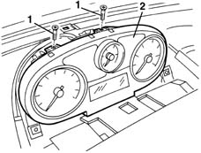
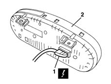

5560B10 analogue control panel - r+r
- Path
- Procedures > 55 ELECTRICAL EQUIPMENT > 5560 INSTRUMENT PANEL > 5560B analogue control panel > 5560B10 analogue control panel - r+r
- Kind
- repair procedure (removal / refitting; the operation number is the code)
- Applies to
- all engines; all production periods
- Interactive page
- https://sloeber94.github.io/elrnDB-lYpsln/en/#/2429437
Applies to: all engines; all production periods
 Removing
Removing
 Refitting
Refitting5040C12 air conditioner housing - r r with facia disconnected
7040A74 TRIM under control panel - R.R.
7040A11 control panel lid - r + r
1. Undo the bolts.
2. Move the instrument panel slightly.

Applies to: all engines; all production periods
1. Disconnect the electrical connection.
 | Name | Connector |
|---|---|---|
1 | Instrument panel |
| Name | Connector |
|---|---|---|
1 | Instrument panel |
2. Recover the control panel.

Applies to: all engines; all production periods
Refitting
RemovingCheck that the instrument panel is not damaged.
Connect the electrical connection.
Refit the instrument panel and fix it using the bolt.
7040A11 control panel lid - r + r
7040A74 TRIM under control panel - R.R.
5040C12 air conditioner housing - r r with facia disconnected
Check the operation of the instrument and the functions controlled by it.
Topics linked from this page (5)
- 5040C12 air conditioner housing - r r with facia disconnected
- 7040A11 control panel lid - r + r
- 7040A74 TRIM under control panel - R.R.
- E50A Instrument panel ( FACIA )
- E50B Instrument panel ( FACIA )
Topics that link to this page (10)
- 5020B10 heater control support - r+r
- 5020B35 outdoor/recirculation air intake flap control cable - r r
- 5020B38 air distribution flap control cable - r+r
- 5020B42 air mixer flap control cable - r+r
- 5040C10 air conditioner box - r+r
- 5040D75 Air conditioning recirculation flap control MOTOR - R.R.
- 5580C22 AIR BAG MODULE - Passenger side - R.R.
- 7040A10 instrument facia trim - r+r
- 7040A25 central facia trim - r r
- 7040L10 cabin floor carpet - r r